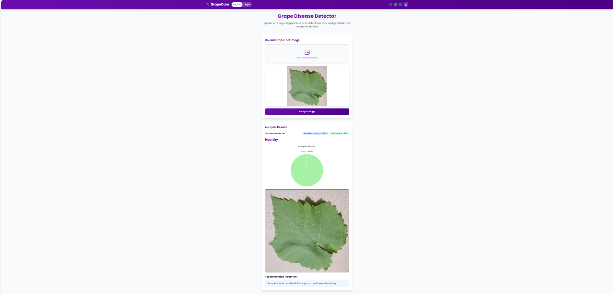
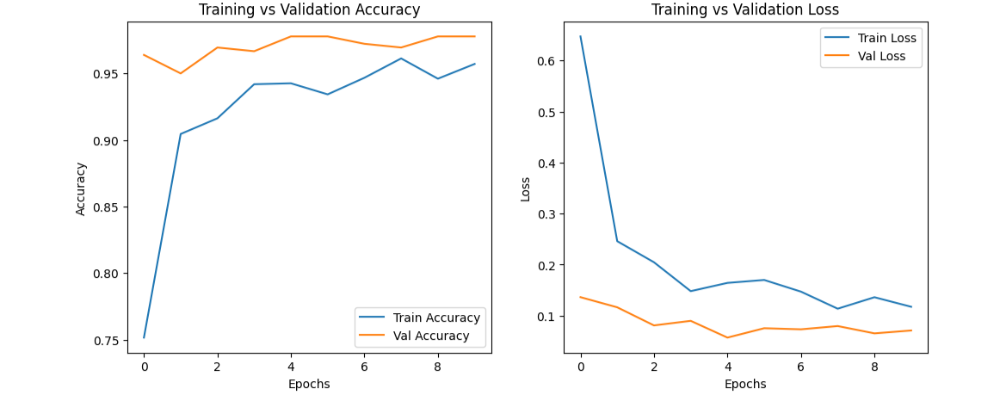
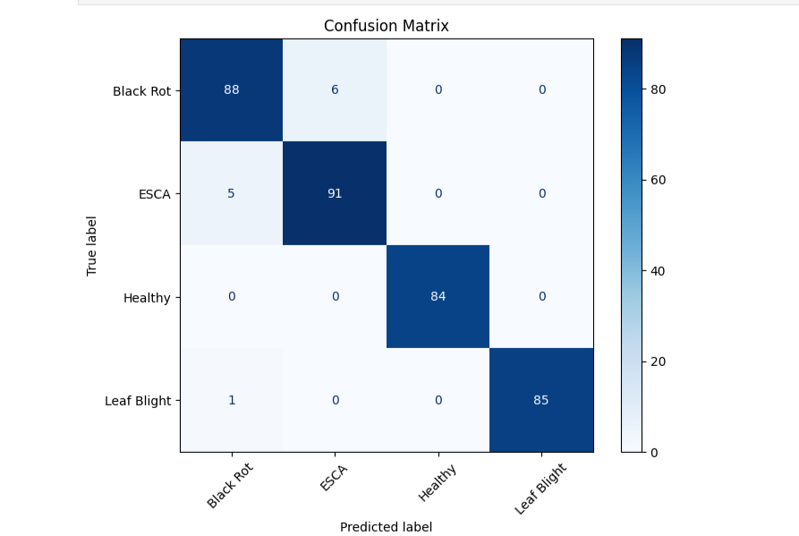
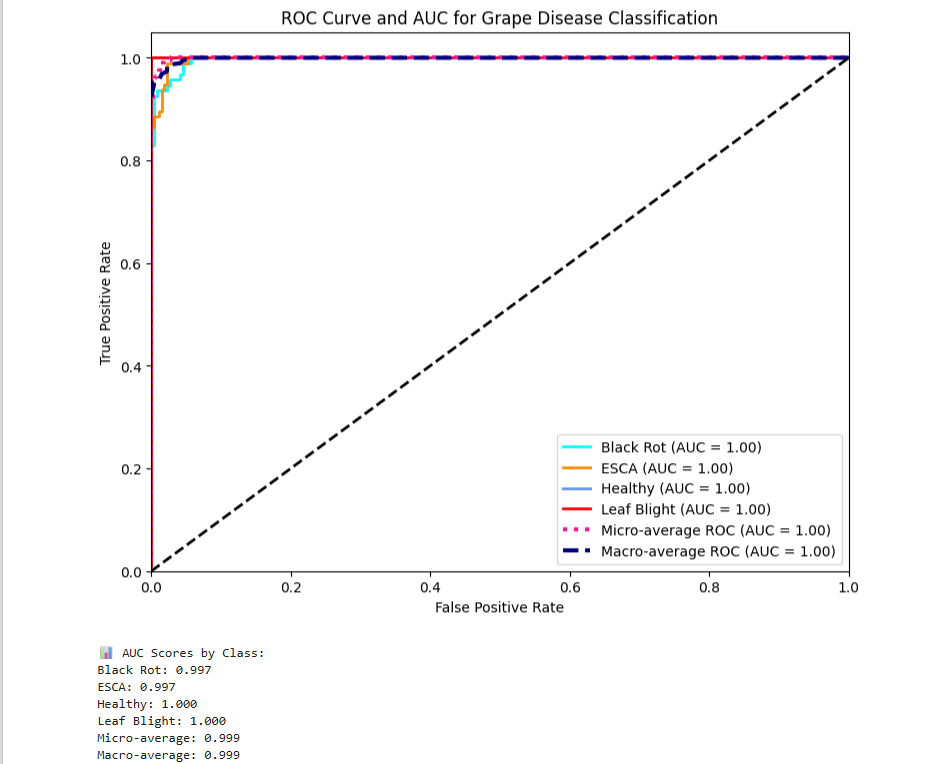
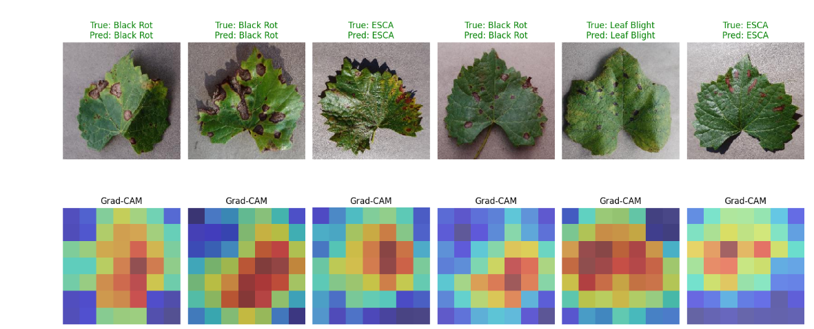
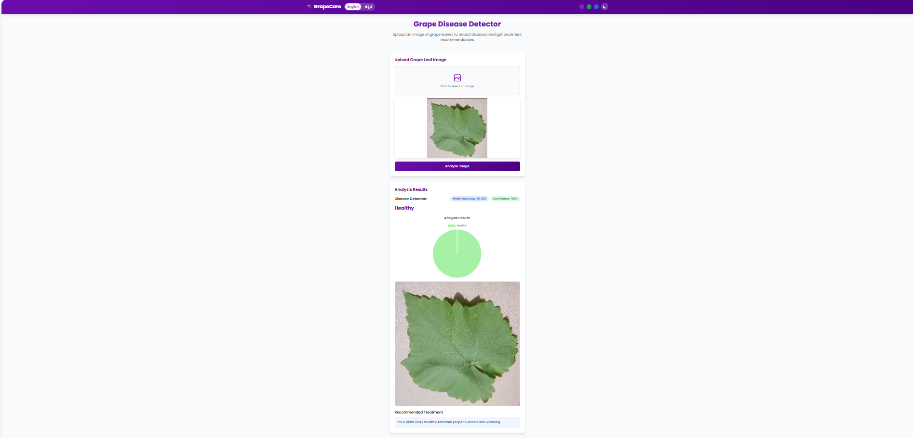
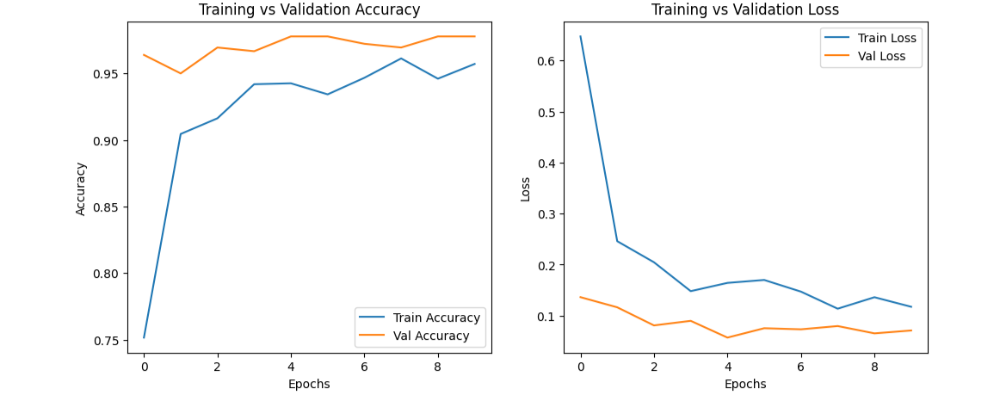
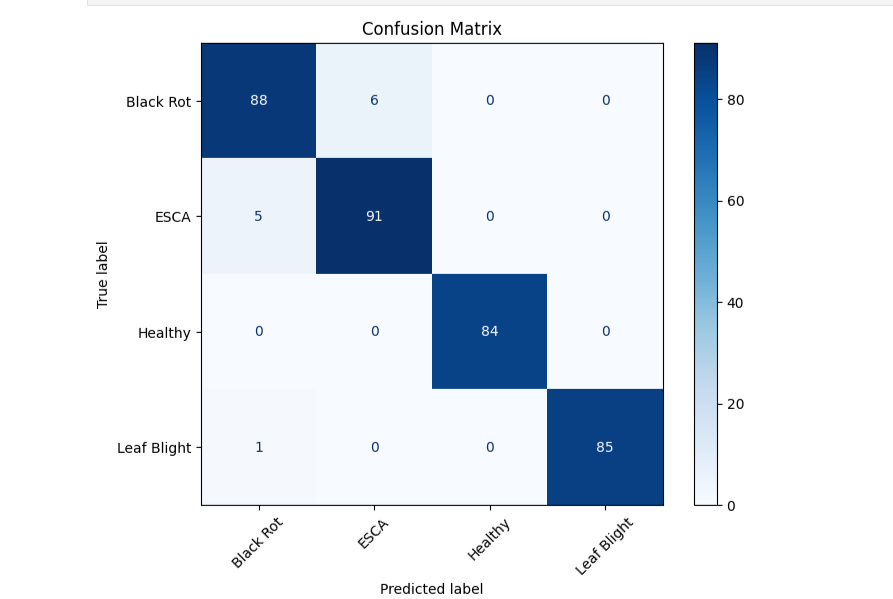
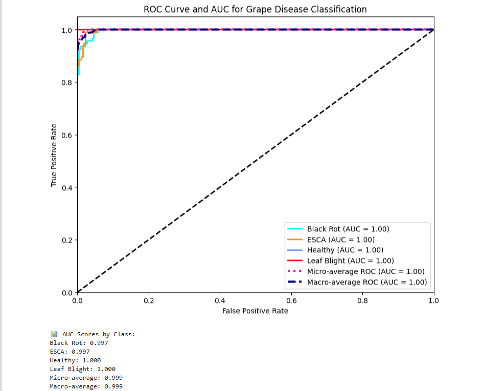
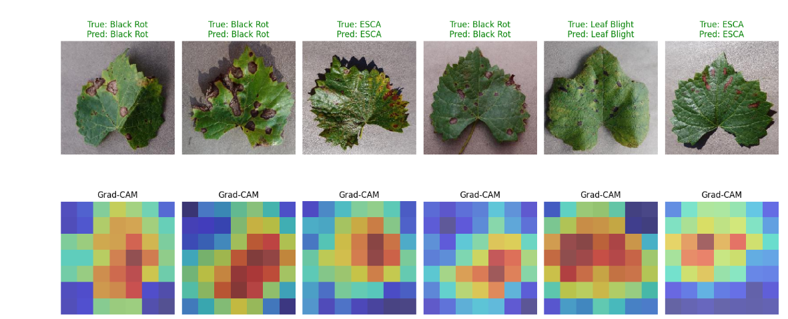

GrapeCare: An AI-Powered Grape Disease Detector & Farmer Assistant
A comprehensive, multilingual web application that leverages deep learning to provide instant grape leaf disease diagnosis and an AI chatbot to offer agricultural advice.
The Problem
Grape farming is a significant agricultural sector, but crops are highly susceptible to diseases like Black Rot, ESCA, and Leaf Blight. Early and accurate detection is crucial to prevent crop loss, but this often requires expert knowledge that may not be readily available to all farmers. Furthermore, language can be a barrier to accessing technical information. This project aimed to solve this by creating an accessible, easy-to-use tool for farmers to instantly diagnose diseases and get advice.
My Role
This was my final year major project. My role encompassed the full project lifecycle, from developing the deep learning model to building and deploying the full-stack web application, including the front-end UI and the back-end AI chatbot integration.
Key Features
- Instant Disease Diagnosis: Upload a grape leaf image to get an immediate diagnosis with a high accuracy score.
- Deep Learning Model: Built using a Transfer Learning approach with TensorFlow and Keras.
- Multilingual Web App: A user-friendly interface that works in both English and Kannada.
- AI Chatbot Assistant: An integrated "GrapeCare Assistant" to answer farmer's questions.
- Explainable AI (XAI): Used Grad-CAM to visualize which parts of the leaf image the model focused on, ensuring model transparency.
The Technical Process
The core of the application is a Convolutional Neural Network (CNN) built with TensorFlow and Keras. I used a Transfer Learning approach, leveraging a pre-trained MobileNetV2 model and fine-tuning it on a dataset of grape leaf images across four classes (Black Rot, ESCA, Leaf Blight, and Healthy). The model was trained using callbacks like EarlyStopping and ModelCheckpoint to ensure efficiency and prevent overfitting.
The trained model was then integrated into a Flask web application. The front-end, named "GrapeCare," allows users to upload an image, which is processed by the model in the backend. The application displays the predicted disease, the model's confidence, and a recommended course of action. To further assist farmers, I integrated a multilingual AI chatbot that provides tips and answers to common questions.
Model Performance & Explainability
The final model achieved a validation accuracy of over 97%. The high performance is visually demonstrated by the training plots, confusion matrix, and ROC curve. To ensure the model was not just guessing, I implemented Grad-CAM, an explainability technique that creates a heatmap to show which pixels were most important for a given prediction. This confirms the model is correctly identifying diseased areas on the leaves.
 








